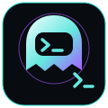

ИИ-визуалы и обработка
Создание визуальных материалов и художественная обработка фотографий под задачу.
VISUAL / IMAGE
NIGHT CREATIVEВизуал, контент и автоматизация для тех, кому нужно больше, чем просто картинка.
Обсудить проект ↗ УслугиНебольшая цифровая мастерская. Работаем над задачей, а не над громкими обещаниями.
>_ SIGNAL ONLINEСоздание визуальных материалов и художественная обработка фотографий под задачу.
VISUAL / IMAGEМакеты, рекламные материалы и оформление цифрового контента.
DESIGN / ADSПодготовка и оформление постов для VK и Telegram.
CONTENT / COPYБоты и автоматизация повторяющихся действий. Объём и возможности согласуем заранее.
BOTS / WORKFLOWКаталог работ пока не подключён. Здесь появятся реальные проекты, без выдуманных клиентов и отзывов.
Первый кейс скоро появится здесь.
Запросить пример ↗Night Creative — небольшая цифровая мастерская на стыке визуала, контента и технологий.
Каждую задачу оцениваем отдельно. До начала работы согласуем формат, объём и ожидаемый результат.
01 / Честный объём работ
02 / Понятная коммуникация
03 / Практичный результат
Опишите, что нужно получить, и приложите материалы, если они есть.